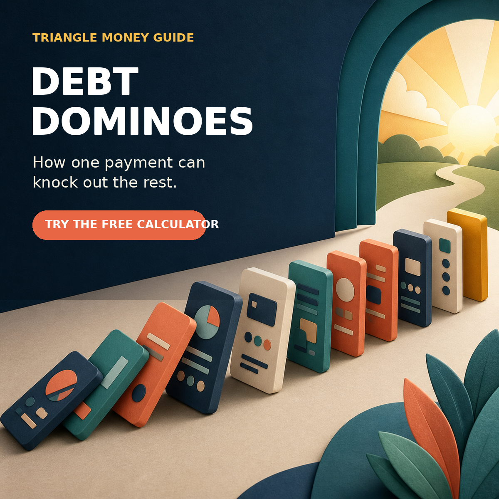

How one extra payment can knock out the rest.

Paying off debt can feel like trying to empty a swimming pool with a coffee mug. You make the payments, the balances move a little, and the finish line still looks suspiciously far away.
Debt stacking changes the experience. It does not promise a miracle rate or require a giant windfall. It gives every payment a job, then makes that payment more powerful each time a balance disappears.
When one debt is paid off, do not let that payment vanish into the checking account. Stack it onto the next debt.
That is how one extra payment can start a chain reaction.
Suppose you have three debts and you are already making the required minimum payment on each. You also find a realistic extra amount that you can put toward debt every month.
You choose one target debt and send the extra money there while keeping the other accounts current. When the target is gone, you take the extra payment you were already making and the minimum payment that belonged to the paid-off debt. You combine them and send the larger amount to the next target.
When that second debt is gone, its old minimum joins the stack too. The amount attacking the final balance can be dramatically larger than the amount you started with, even if your income never changed.
There are two common ways to decide which balance falls first.
With the avalanche, you target the debt with the highest interest rate first. Mathematically, this will generally save the most interest when the balances, rates, and payments behave as assumed.
That matters right now. The Federal Reserve's FRED series showed an average rate of 20.94% in May 2026 for commercial-bank credit-card accounts that were assessed interest. At roughly 21%, expensive debt does not sit quietly while you make up your mind.
The avalanche is usually the efficiency choice.
With the snowball, you target the smallest balance first, regardless of rate. The goal is to earn a quick win, eliminate a bill, and create momentum.
The snowball can cost more interest than the avalanche, especially when a large high-rate balance waits in line. But behavior matters. If seeing an account hit zero keeps you committed for the next two years, that psychological win has real value.
The snowball is often the motivation choice.
Do not pick based on internet tribal warfare. Run your actual numbers.
If the avalanche saves a meaningful amount and the timeline feels manageable, use it. If the difference is modest but the snowball gives you an early win you badly need, that may be the plan you are more likely to finish.
The best method is the one you understand, can afford, and will continue.
The stacking only works if the payment stays stacked.
Imagine that you pay off a card with a $95 minimum payment. That $95 now feels like room in the budget. It is tempting to absorb it into groceries, subscriptions, takeout, or whatever expense is yelling the loudest that month.
But the plan changes when that $95 immediately joins the next debt payment. If you were already sending an extra $250, the next target now gets $345 above its own minimum. When another $180 minimum is freed, the stack grows again.
This is less about finding new money than protecting money that has already been assigned.
An aggressive plan is not automatically a durable plan. Before sending every spare dollar to debt, make sure the household can survive a normal surprise.
Debt stacking is not permission to skip one creditor while attacking another. Missed minimums can bring late fees, penalty rates, credit damage, and collection problems.
If you are already behind, stabilizing the accounts comes before optimizing payoff order.
If a tire, medical bill, or home repair sends you right back to the same credit card, the payoff plan becomes a treadmill. A modest cash buffer can keep an ordinary problem from becoming new revolving debt.
The right cushion varies by household. The principle is simple: debt payoff should reduce fragility, not increase it.
A heroic $800 payment that forces you to use the card again two weeks later is not as useful as a sustainable $300 payment you can repeat.
Start with a real monthly cash-flow number. You can always add tax refunds, bonuses, or side-income payments later.
Debt stacking cannot outrun continued spending forever. If a card must remain open for a recurring bill, account for that charge and pay it separately rather than pretending the balance is moving on schedule.
A balance transfer, personal loan, home-equity product, or refinance can sometimes reduce the rate. But a lower monthly payment is not the same as a lower total cost.
Before consolidating, compare:
The Federal Trade Commission also advises consumers to be cautious with debt-relief companies that charge fees or make broad promises. If you are struggling to keep up, contact creditors directly and consider a reputable nonprofit credit counselor before paying someone to make the problem disappear.
A vague goal like “pay off debt faster” is hard to follow. A useful plan tells you which debt receives the next extra dollar, how large that payment should be, when each balance may reach zero, how the payment stack grows, and how snowball and avalanche results compare.
That is exactly what the Triangle Money Guide Debt Payoff Calculator is built to show.
Enter each debt's balance, APR, and minimum payment. Add the extra amount you can consistently contribute. The calculator compares snowball and avalanche strategies so you can see the projected payoff path instead of guessing.
Build your debt domino plan with the free Debt Payoff Calculator.
The final step matters. Future-you should not have to renegotiate the plan every time a balance hits zero.
Debt stacking works because progress creates more capacity for progress. The first payoff may take patience. The next one gets the benefit of a larger payment, and the next gets a larger one still.
One domino falls. Its payment moves forward. Then the whole plan starts to move faster.
Use the Debt Payoff Calculator to compare your real numbers and decide which domino should fall first.
This article is for educational purposes only and is not individualized financial, legal, tax, or credit advice. Payoff estimates may change with interest rates, fees, payment timing, and new charges.
Triangle Money Guide helps households in Raleigh, Durham, Cary, Apex, Chapel Hill, and surrounding communities make clearer money decisions. Schedule a consultation to talk through your household plan.
Written by Jonathan Parker | Schedule a free consultation